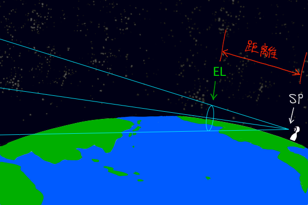
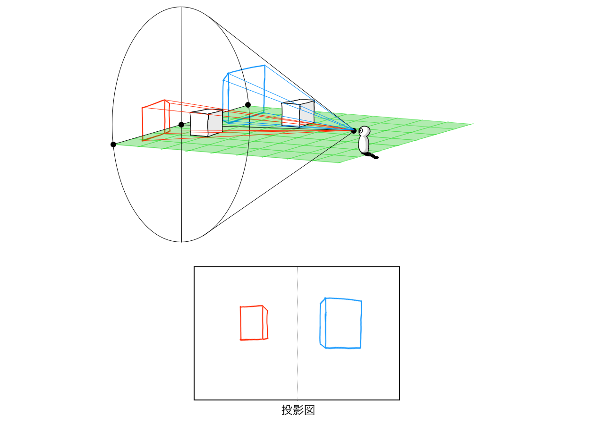

視円錐のおさらい
以前書いた建築パースを徹底研究！パース理論の基礎知識と描き方の記事で視円錐のことについて触れましたが、どうやらパースを理解するカギはこの視円錐にあるということに気づきました。パース初心者はまず透視図法から学び始めますが、そのうち画角という概念や、カメラレンズによる画面の変化などに足止めを食らうものだと思います。そして、望遠パースは遠くの景色を切り取ったものだとか、広角パースは立体の角が鋭角になって歪むものだと聞かされます。今だから言う事ができますが、そんなの解説ではなくてただ見たまんま言ってるだけですね。
そこでどうにかして一言で簡単に説明できないかと考えたところ、視円錐のことをしっかり理解した上で、その視円錐という図形の中に風景を配置していくという方法に行き着きました。これだといとも簡単にカメラレンズによって風景が違って見える理由が図解できます。
まずは視円錐についておさらいしておきましょう。難しく考える必要はないので、視円錐の見方と用語を覚える程度はしておいてください。小難しく解説しているものを読みたい場合はこちらの建築パースを徹底研究！パース理論の基礎知識と描き方の記事をどうぞ。

このとき視円錐の形状を規定する数値が必要になります。それは視円錐の頂角と高さです。それぞれ画角と距離を意味します。ちなみに距離については望遠パースと広角パースで見た目で違いがあるように見えますが実際は同じ距離を表すのですが、詳しくは後ほど。

望遠と広角の視円錐の違い
望遠パースと広角パースの視円錐の形状を比較すると、画角が明らかに異なることが分かります。望遠パースは画角が小さく（約10~30°程度）、広角パースは画角が大きい（約70~90°）ということはちょっと調べれば情報は手に入りますし、視円錐の形状も分かりやすく画角を反映しています。

ところで、この図では望遠パースの視円錐の方がかなり長く描かれていますが、視円錐の高さはカメラレンズによらず全て同じになります。なぜなら、視円錐とはカメラレンズで撮影することができる風景の範囲のことなので、望遠レンズであっても広角レンズであっても室内や地面を撮影しない限り最も遠くに写るものは広大な空になるはずだからです。しかし空は無限遠の彼方にある宇宙なので距離を数値で表すことができませんので、その広大な空間に存在する空の次に遠いもので代用します。それが地平線であり、一般的な言い方をするとアイレベル（EL）ということになります。つまり、望遠レンズだろうと広角レンズであろうと撮影者の立ち位置（SP）と地平線（EL）の距離は変化しないということです。でも視円錐の高さを望遠・広角ともに等しく作図してしまうと底面が紙に収まらなくなるくらい大きくなってしまうので、やむを得ず視円錐の高さ（つまり地平線までの距離）を短くして、視円錐の底面が紙に収まる大きさになるようにしています。あ、一応断っておくと、地平線＝アイレベルというのはほとんどの場合そうなるだけなのであって、実際のアイレベルとは視線の高さで画面を横切る水平線という考え方が正しいです。そして人間が見る景色と、絵にしたときの景色はもはや全くの別次元のものなので、人間が認識する景色ではアイレベルは画面の中心を通るものと考えますが、絵にするときは一番良い構図で画面を切り取るのでアイレベルが画面の中心を通るとは限りません。

要するに望遠パースと広角パースの視円錐の違いは画角のみということになります。ただ、実際に絵にするときには被写界深度（ピントのこと）を表現するため望遠パースにはぼかしフィルターがかけられることが多いです。
視円錐の底面に風景を投影する考え方
では実際に視円錐を使ってパース作画の原理を考えていきましょう。基本は投影図です。視円錐の視点SPに照明があると仮定して、視円錐の内部にある立体の影を視円錐の底面に投影してみてください。このとき黄緑色の平面が描かれていますが、これは地面のことです。キャラが立っている場所の目線の高さがSPとなるので、風景中の立体が接地している部分は位置関係からすると傾いて見えています。なので目線より下側に位置する地面と接地する部分はアイレベルELより下側に投影されることになります。ちなみにSPからELまでの距離が数十kmだとすると、この立体のサイズは数百m〜数kmという巨大建造物になってしまいますね。まあ細かい事はあまり気にしないでください。
まずは広角パースの視円錐を見てみましょう。これは単純に影を投影するようにしながら、手前に見えるものから画面PPに配置していくだけです。このとき手前にあるものほど拡大されるため、画面PPには手前にあったものは大きく写り、遠くにあったものになるにつれて小さくなっていきます。アイレベルEL付近のものはもはや小さくなりすぎて潰れて見えると思います。

次に望遠パースの視円錐を見てみます。こちらも広角パースのときと同じ原理で投影していくのですが、画角が小さいので「投影される元の立体」と「その影」の大きさの差は広角パースのときに比べ小さくなります。すると「手前にあったものの影」と「遠くにあったものの影」の大きさの差も小さくなります。故に望遠パースでは奥行きの縮小が少なくなり、前後関係にある立体がほぼ原寸のまま並ぶような絵になります。ただ、望遠レンズは被写界深度が浅いので被写体の前景と背景をぼかすことができたりしますが、そのあたりはここでは触れないので各自で勉強したカメラの知識や画面の演出方法に基づいて美しい絵にしてください。

ちなみに望遠レンズで近景と遠景がぼけてしまう理由は何でしょう。カメラに詳しくないのでビシッと断言することはできないのですが、被写界深度と焦点距離がどうのこうのという感じじゃないですか？うまく説明できないので絵で描くとこんな感じ。ピントが合う風景までの距離は、例えば遠くの街並を望遠レンズで撮影したとしたら数km先というくらいでしょうか。

ところで、望遠パースのときに奥行きが圧縮されているという話は聞いた事があるでしょうか。奥行きの縮小ではなく奥行きの圧縮です。言葉の使い方がややこしいので建築パースを徹底研究！パース理論の基礎知識と描き方の記事で用語の確認をしておいてください。有名な資料でいうと宮崎駿が『母をたずねて三千里』の制作スタッフに配布したパース作画の注意書きなどがありますね。奥行きの圧縮が極端になると、場合によっては奥行きを無視して正面から見た平面図を並べるだけで望遠パースの絵ができてしまうことがあります。ビル街を遠くから撮影した写真などはほとんど奥行きのない煙突みたいなビルが並んでいるだけに見えたりします。この奥行きの圧縮の原理もさきほどの視円錐で影を投影するように考えれば簡単に説明できます。
さて、奥行きというのは手前の部分と奥の部分までの距離をどれくらいで描くかで決定しますが、それはつまり視円錐の中で立体の手前側と奥側を投影すればいいわけです。すると広角パースのときは奥行きが長くなり、望遠パースでは奥行きが短くなります。この奥行きの圧縮の原理は望遠パースの絵を作るときには非常に重要なことなので、なんとなく分かるけどなんでそうなるのか理解できなかった人も、このように単純に投影した結果そうなってますよ〜と覚えておく良いと思います。ただし、完成した絵は望遠パースだろうと広角パースだろうと画面は同じサイズに統一されるはずなので、広角パースで見た立体はかなり小さくなってしまいます。逆に言えば、望遠パースで見た立体は遠くのものも大きく写ります。SPから同じ距離にある立体でも望遠レンズだと大きく見え、広角レンズだと小さく見えるのはこのためです。...このためというか、望遠レンズが被写体を拡大して写しているだけです。

以上が視円錐を用いた望遠パースと広角パースの解説ですが、望遠や広角に限らずノーマルなレンズも同じ考え方で理解できると思います。パースを勉強中だけど透視図法を理解しただけでステップアップできなくて悩んでいる方は是非、視円錐の勉強に取りかかってみると面白くなってくるんじゃないでしょうか。